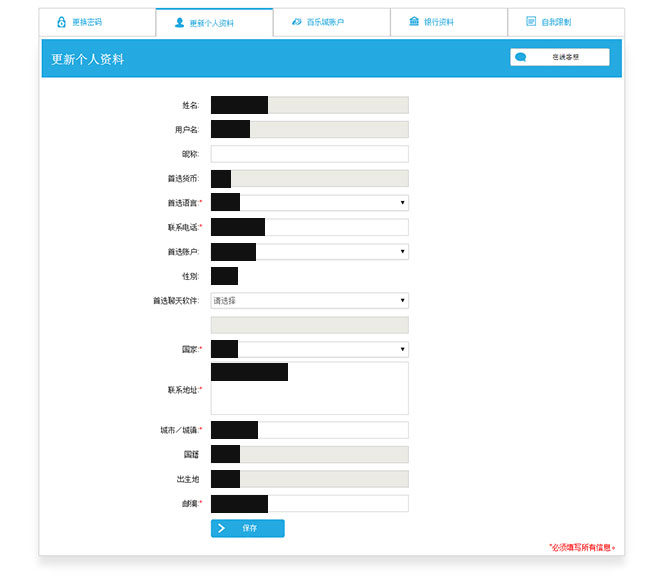

如果您需要对账户的安全设置或个人信息进行更改，只需鼠标滑过网站顶部语言栏左侧的“账户管理”功能键，点击选择下拉菜单中的相应功能即可。
更改密码
- 点击下拉菜单中的“更改密码”项。
- 据提示依次输入当前密码、新密码和确认新密码。
- 当您的密码成功修改后，系统将发送一封通知邮件至您的邮箱，说明您的旧密码已经失效，仅可使用新密码进行登录。
更新资料
- 点击下拉菜单栏中的“更新资料”项。
- 对您所希望进行更改的信息进行更新（部分信息一经注册，将无法更改，如用户名等）。
 - 当点击“保存”完成资料更新后，系统将弹出提示窗口。
银行资料
- 点击下拉菜单中的“银行资料”项。
- 您可对“存款账户”或“提款账户”信息进行更新，点击“设置默认”即可在您之后的存款/提款操作中将本账户设置为默认；点击“查看”即可查看账户详细资料。
行为设置
乐天堂为自控力较弱的用户提供有“行为设置”功能，能让您在乐天堂的游戏成为娱乐休闲，而为职业或纯粹博彩。
- 点击下拉菜单栏中的“行为设置”项。
- 根据提示选择您将要进行的设置期限。
- “更新”后，系统将会自动执行您所要求的更改。